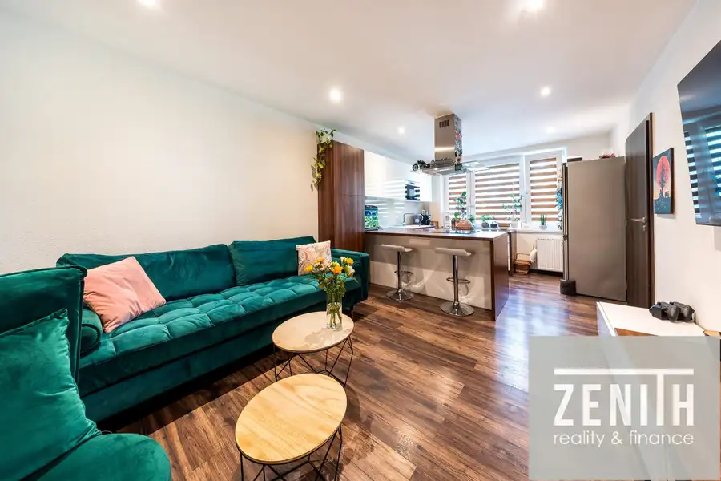
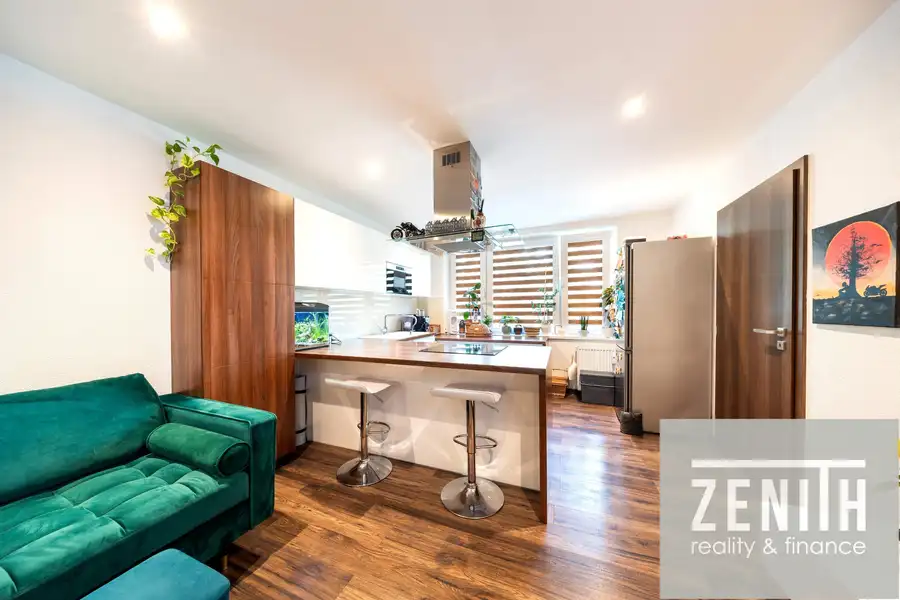
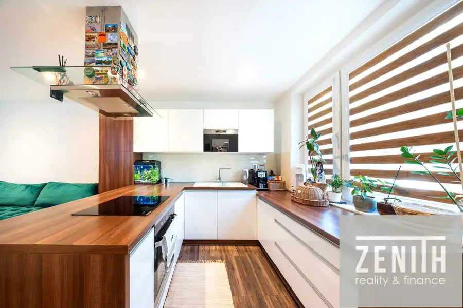
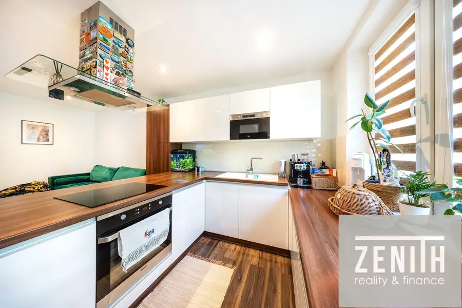
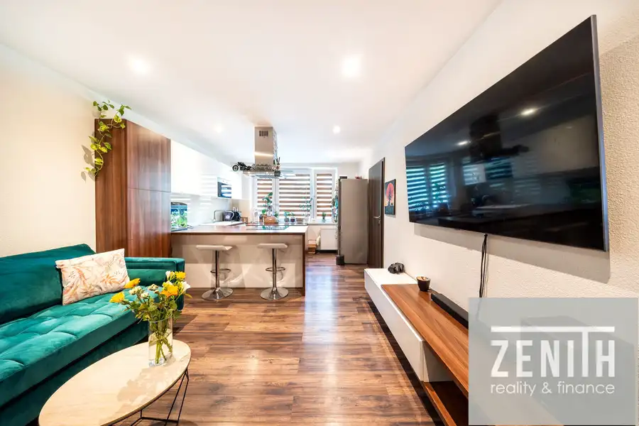
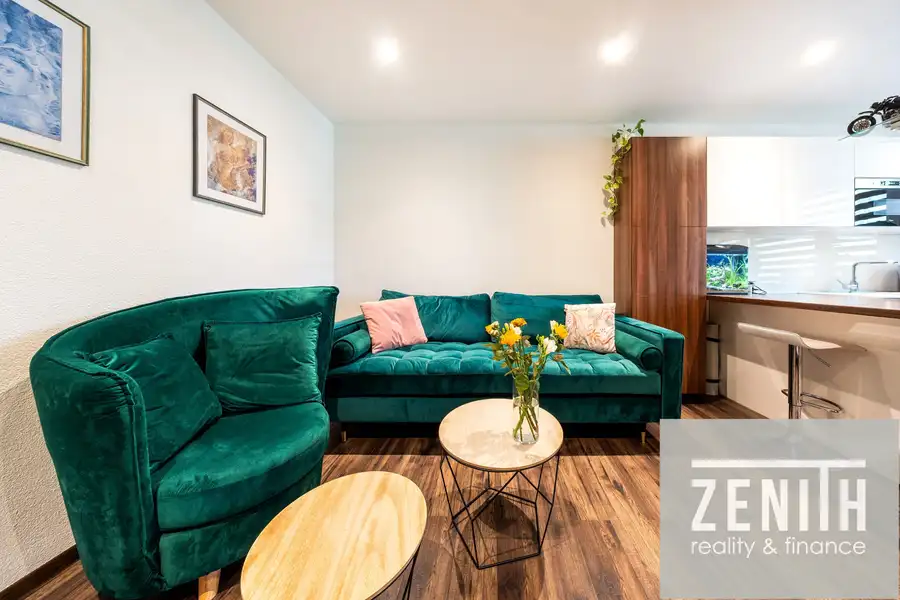

Štýlový 3-izbový byt po kompletnej rekonštrukcii – stačí sa nasťahovať
Zvolen






- Dispozícia3-izbový
- Plocha68 m²
- Poschodie3. z 9
- StavKompletná rekonštrukcia
- VlastníctvoOsobné
- Energetická triedaC
O nehnuteľnosti
Hľadáte bývanie bez ďalších investícií, s moderným vzhľadom a praktickou dispozíciou? Tento kompletne zrekonštruovaný 3-izbový byt s celkovou výmerou 68 m² vás osloví svojím príjemným priestorom, kvalitným prevedením a výbornou orientáciou. Hlavné výhody bytu:•Kompletná rekonštrukcia realizovaná v roku 2014 •Čiastočne upravená dispozícia pre komfortnejšie bývanie •Rozloha bytu 63 m² + pivnica 3,44 m² + komora na medziposchodí 1,11 m² •Nachádza sa na 2. poschodí z 8 •Orientácia na juhovýchod a severozápad – dostatok denného svetla počas celého dňa •Bezpečnostné dvere•Stierkové omietky a znížené stropy s bodovým osvetlením •Vnútorné zateplenie obvodových stien pre vyšší tepelný komfort •Optický internet •Sprchovací kút •Ústredné vykurovanie a ohrev teplej vody z diaľkovej výmenníkovej stanice •Oceľové panelové radiátory s regulačnými ventilmi a meračmi tepla •Predáva sa čiastočne zariadený, po dohode aj kompletne zariadený ? Bytový domBytový dom bol skolaudovaný v roku 1968 a v roku 2012 prešiel čiastočnou rekonštrukciou:•zateplenie budovy, •nová fasáda, •výmena okien, •nové vstupné dvere a dvere v spoločných priestoroch. K dispozícii je výťah (čiastočne zrekonštruovaný) a samozrejmosťou je separovaný zber odpadu.? Dispozícia a vybavenie•3 izby •kúpeľňa so sprchovacím kútom •pivnica 3,44 m² •komora na medziposchodí 1,11 m² •bez balkóna a lodžie Tento byt je ideálnou voľbou pre rodinu, pár alebo kohokoľvek, kto hľadá moderné bývanie s dostatkom úložného priestoru a bez nutnosti ďalších rekonštrukcií.? Neváhajte a dohodnite si obhliadku – takýto byt sa neobjavuje každý deň!? Financovanie:Kúpa bytu je možná aj prostredníctvom hypotekárneho úveru. S jeho vybavením Vám ochotne, profesionálne a bez starostí pomôže náš hypotekárny špecialista, ktorý pre Vás nájde najvýhodnejšie riešenie na mieru.? Zodpovední makléri:Arnold Gross? 0910 302 991 gross@zenith-reality.skIng. Michal Zlatohlávek? 0917 365 547 zlatohlavek@zenith-reality.sk
Parametre
- Bezpečnosť
- Bezpečnostné dvere, Elektronická brána, Elektronický zámkový systém
- Cena vrátane energií
- Nie
- Doprava
- MHD
- Druh
- 3 izbový byt
- Dátum zverejnenia
- 04. 06. 2026
- Energetický certifikát budovy
- C
- Orientácia
- Juhovýchodná, Severozápadná
- Podlažie
- 3
- Počet izieb / miestností
- 3
- Počet nadzemných podlaží
- 9
- Počet spální
- 1
- Rok kolaudácie
- 1968
- Rok poslednej rekonštrukcie
- 2014
- Rok výstavby
- 1968
- Stav nehnuteľnosti
- Kompletná rekonštrukcia
- Telekomunikácie
- Internet, Optická sieť, Káblová TV
- Typ
- Predaj
- Typ konštrukcie
- Železobetónová
- Vlastníctvo
- Osobné
- Vybavenie
- Špajza
- Vybavenie objektu
- Zariadený so spotrebičmi
- Vykurovanie
- Ústredné
- Zariadenie
- Zariadené kompletne
- Zdroj tepla
- Teplo z kotolne
- Úžitková plocha
- 68 m²